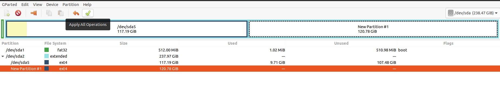

Ubuntu
| Penulis: | Yohan Sidik |
|---|
Daftar Isi
Getting Started
Partisi Harddisk
- Software: gparted
- Membuat partisi di Ubuntu
Install Softwares
- snap
$ sudo snap install namasoftware
- apt
$ sudo apt install namasoftware
- deb
$ sudo dpkg -i $DEB
$DEB adalah path ke instalasi file (deb).
Pandoc
Install
- download installer
- Command:
$ sudo dpkg -i $DEB
$DEB adalah path ke instalasi file (deb)
Python
- Sudah terinstall secara default
- Cek di terminal: python3 -–version
- Install pip: sudo apt-get -y install python3-pip
Inkscape
- Go to the “Ubuntu Software”
Make
- Install: sudo apt install make
Markdown Editor (ReText)
- Command: sudo apt install -y retext
- Referensi
Latex
$ sudo apt-get install texlive-full
$ sudo apt-add-repository ppa:blahota/texstudio $ sudo apt-get update $ sudo apt-get install texstudio
Networking
Samba
$ sudo apt update $ sudo apt install samba
- Setting IP-Address: 192.168.0.2 & Netmask: 255.255.255.0
- Akses komputer dalam network: smb://IP-Address/
- Referensi: Share a folder in ubuntu
- Referensi: Setting LAN in ubuntu
Google Chrome
- Google Chrome tidak tersedia di Ubuntu Software
- Install Google Chrome
$ wget https://dl.google.com/linux/direct/google-chrome-stable_current_amd64.deb $ sudo dpkg -i google-chrome-stable_current_amd64.deb
Terminal PDF
- merge pdf: pdfunite
- Example: pdfunite sample1.pdf sample2.pdf sample.pdf
- extract pdf: qpdf
- pdftk
Tree
Directory tree bisa diprint di terminal dengan tree command. Command tersebut adalah built-in di Windows. Sedangkan di ubuntu harus diinstall terlebih dahulu:
sudo apt-get install tree
Selanjutnya bisa digunakan dengan mengetikkan tree command sebagai berikut:
tree
Hasilnya:

Shotwell
Shotwell adalah image viewer dan editor.
Hieararki Filesystem
Sistem folder di ubuntu dan deskripsinya:
| Direktori | Deskripsi |
|---|---|
| / | root directory |
| /bin | command binaries misalnya: cat, ls, cp |
| /boot | boot loader |
| /dev | device files, misalnya /dev/null, /dev/sda1 |
| /etc | file konfigurasi |
| /home | home direktori |
| /lib | library untuk /bin dan /sbin |
| /media | mount point untuk removable media (usb drive) |
| /mnt | mounting drive |
| /proc | vitual filesystem |
| /root | home directory untuk root user |
| /run | run-time variable data |
| /sbin | system binaries, misalnya fsck, init, route |
| /srv | |
| /tmp | temporary space |
| /usr | programs, libraries, dan dokumentasi |
| /var | tempat penyimpanan untuk semua variable files |
Referensi
- Wikipedia - Fileystem Hierarchy Standard
- Tldp - General Overview of The Linux File System
Bootable Flash Drive
Berikut ini adalah langkah-langkah untuk membuat bootable usb. Bootable usb ini diperuntukkan untuk menginstall sebuah operating system (OS) misalnya ubuntu dan windows melalui usb.
- Colokkan flaskdisk (usb drive) ke usb port di komputer.
- Buka Startup Disk Creator.
- Klik other untuk memilih ISO file.
- Pilih flaskdisk dan kemudian klik Make Startup Disk.

Referensi
Partisi Hardisk
Partisi hardisk di Ubuntu tidak bisa dilakukan ketika Ubuntu sedang dioperasikan. Partisi dapat dilakukan dengan cara menjalankan instalasi ubuntu dari usb kemudian pilih live ubuntu. Selanjutnya, partisi dapat dilakukan dengan program yang bernama Gparted.
Contoh hardisk sebelum partisi adalah:

Dengan memilih menu Partition, maka hasil partisinya adalah sbb:
Install Printer
Printer canon diinstall di ubuntu dengan cara sebagai berikut:
- Tambahkan repositori
sudo add-apt-repository ppa:michael-gruz/canon sudo apt-get update
- Install printer sesuai dengan versinya. Contohnya adalah printer MP540.
sudo apt-get install cnijfilter-mp540series
Referensi
Basic Command
Berikut ini adalah basic command ubuntu yang sering saya gunakan:
| Task | Command |
|---|---|
| update ubuntu package | sudo apt-get update |
| install package | sudo apt-get install <Package> |
| menggunakan super user | sudo su |
| open terminal | CTRL + ALT + T |
| membuat file baru | touch filenamedotextension (contoh touch README.md) |
| membuat folder baru | mkdir namafolder |
| berpindah ke subfolder | cd namafolder |
| memindah sebuah file | mv asalFile tujuanFile |
| exit dari terminal | exit |
| rename file | mv file.ext1 file.ext2 |
| install deb packages | sudo dpkg -i filenamedotdeb |
| berpindah ke path sebelumnya | cd .. |
| menampilkan isi file | cp filenamedotextension |
| menampilkan isi direktori | ls atau ls -a (memunculkan hidden files) |
| delete file | rm filenamedotextension |
| delete semua dengan nama tertentu | rm *filename* |
| open file dengan default program | start filenamedotextension |
| clear terminal | clear atau CTRL + L |
| manual command | man ls (manual dari command ls) |
Akses Network Drive
Ada 2 metode untuk akses network drive di ubuntu.
- GUI (file explorer)
- Install samba
- Other Locations >> Connect to Server >> Enter server address
- Server address format= smb://ip-address
- Terminal
- Install smbclient
- Command: smbclient -L=ip-address
Untuk cara 2, masih ada isu. Setelah daftar shared hardisk muncul, kemudian ketik smbclient //ip-address/L, maka akan muncul pesan:
tree connect failed: NT_STATUS_REQUEST_NOT_ACCEPTED
Terminal Multiplexer
Tmux adalah terminal multiplexer yang memungkinkan untuk membuka banyak tab dalam satu terminal.
Install
sudo apt install tmux
Run
- open terminal, kemudian ketik: tmux
- split terminal:
- horizontal: Ctrl+b+"
- vertikal: Ctrl+b+%
- berpindah antar terminal:
- next terminal: Ctrl+b+o
- previous terminal: Ctrl+b+;
- menutup current terminal: Ctrl+b+x
- buka last session: open normal terminal, kemudian ketik: tmux attach
- kembali normal terminal: Ctrl+b+d
- list terminal: tmux list-sessions
Referensi
Mounting Drive
- Mount drive
Buat sebuah folder sebagai mount point, misalnya /mnt/Data.
$ sudo mkdir /mnt/Data $ sudo mount /dev/sdb6 /mnt/Data
Sekarang data bisa diakses di /mnt/Data.
- Auto-mount at boot
File yang harus diedit adalah /etc/fstab. Sebelumnya cari terlebih dahulu UUID.
$ ls -al /dev/disk/by-uuid
Kemudian editlah /etc/fstab, misalnya:
/etc/fstab: static file system information. # # Use 'blkid' to print the universally unique identifier for a # device; this may be used with UUID= as a more robust way to name devices # that works even if disks are added and removed. See fstab(5). # # <file system> <mount point> <type> <options> <dump> <pass> # / was on /dev/sdb1 during installation UUID=63a46dce-b895-4c1f-9034-b1104694a956 / ext4 errors=remount-ro 0 1 # swap was on /dev/sdb5 during installation UUID=b9b9ee49-c69c-475b-894b-1279d44034ae none swap sw 0 0 # data drive UUID=19fa40a3-fd17-412f-9063-a29ca0e75f93 /mnt/Data ext4 defaults 0 0
- Test Fstab
Sebelum rebooting, cek terlebih dengan cara:
sudo mount -a
- Unmounting drive dengan umount
sudo umount /mnt/Data
Referensi:
Change Permission
Untuk melihat permission dari file atau folder:
$ ls -l
atau dengan ditambah opsi -t apabila file ingin diurutkan berdasarkan waktu.
$ ls -lt
Misalnya ls -lt diterapkan pada folder demo, hasilnya adalah:

Pada gambar di atas ada nama fajar fajar yang secara berurutan. Itu maksudnya adalah nama user dan nama grup. Selanjutnya ada kode berikut:
-rw-rw-r--
dan
drwxrwxr-x
Tanda (-) di awal kode tersebut menandakan itu adalah sebuah file. Sedangkan (d) menandakan sebuah direktori. Kemudian rwx adalah kode untuk:
- r=read
- w=write
- x=executable
Kode rwx di atas bisa dinyatakan dengan huruf seperti contoh di atas atau dengan huruf sebagai berikut:
- r=4
- w=2
- x=1
Kode -rw-rw-r--, dapat dibaca sebagai berikut:
| Tipe | user | grup | other |
|---|---|---|---|
| rw- | rw- | r-- | |
| File | 6 | 6 | 4 |
Jadi apabila ingin mengubah permission dari sebuah file atau folder, bisa menggunakan command berikut:
sudo chmod 664 namaFile.extension